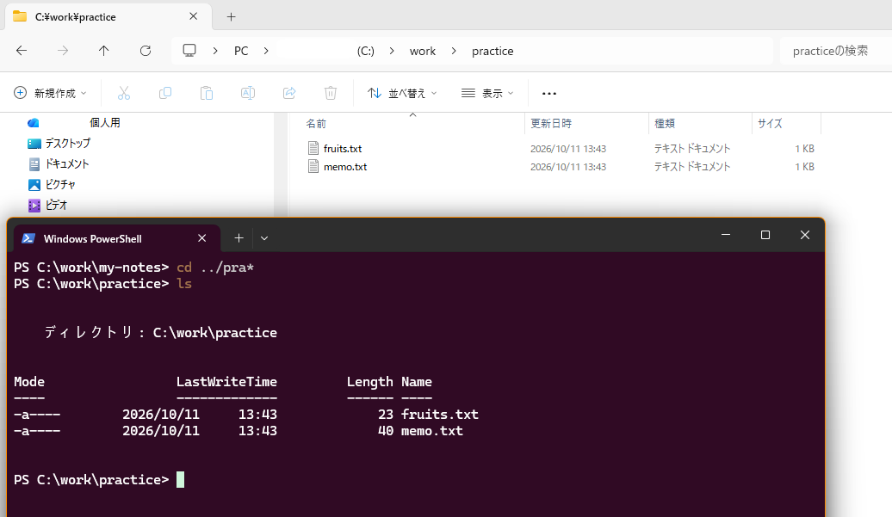
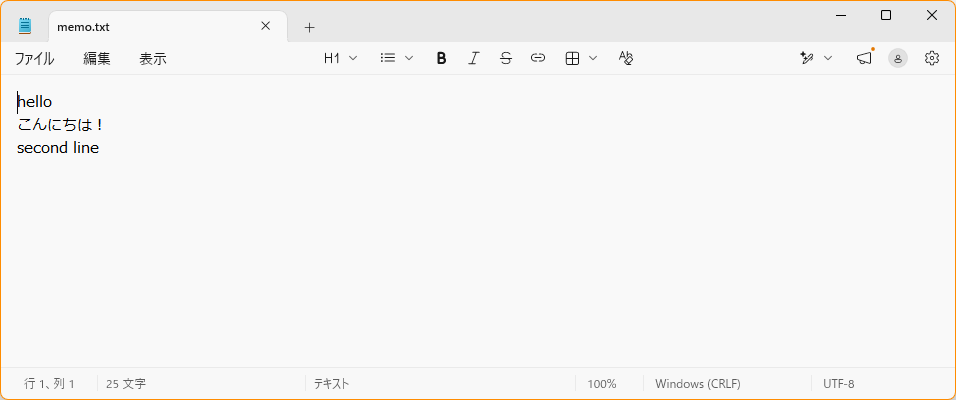

ターミナル入門
- ターミナルが何かを、エクスプローラーと比べて説明できる
- 「今いる場所」を確認し、フォルダを移動できる
- フォルダとファイルを、コマンドで作れる
- ターミナルから、メモ帳を起動して、ファイルを編集できる
2-1. ターミナルとは
ターミナルは、パソコンに文字で指示を出す画面です。エクスプローラーは、マウスでクリックして指示を出します。ターミナルは、キーボードで「コマンド」という短い命令を打って指示を出します。操作する相手は、どちらも同じファイルとフォルダです。
この教材では、Windows 11 に最初から入っている PowerShell（パワーシェル）を使います。以降、「ターミナルを開く」と書いたら、PowerShell を開くことを指します。
☕ コーヒーブレイク：ターミナル？ コマンドプロンプト？ シェル？ 呼び名がたくさんある理由（読み飛ばしてOK）
調べ物をしていると、「ターミナル」「コンソール」「シェル」「コマンドプロンプト」「PowerShell」「CLI」……と、似た言葉がたくさん出てきます。実は、3つの階層に分けて考えると、整理できます。
| 呼び名 | 意味 | 見分け方の例（行の先頭） |
|---|---|---|
| ターミナル（端末） | 文字で操作する窓。昔は、大型コンピューターにつなぐ専用の機械（キーボードと画面）のことだった | — |
| コンソール | ターミナルとほぼ同じ意味で使われる言葉 | — |
| シェル | 窓の中にいて、打った命令を受け取る係。名前は「貝殻」。パソコンの中心部（OS）を、殻のように包む窓口、という意味 | — |
| コマンドプロンプト | Windows に古くからあるシェル（cmd ともいう）。昔の MS-DOS の流れをくむ | C:\Users\taro> |
| PowerShell | コマンドプロンプトより新しい、Windows のシェル。この教材で使う | PS C:\Users\taro> |
| Git Bash | Git と一緒にインストールされる、Mac や Linux と同じ種類のシェル | taro@PC MINGW64 ~ のような形 |
| CLI | 「コマンドラインインターフェース」の略。文字で操作する方式全体のこと。マウスで操作する方式は GUI という | — |
なぜ、こんなに呼び名があるの？ もともと別々のものだった「窓」と「受付係」が、時代とともに組み合わせを変えながら使われてきたためです。今の Windows 11 では、「Windows Terminal」という1つの窓の中で、PowerShell やコマンドプロンプト、Git Bash を、タブで切り替えて使えます。
困ったときの目安 ネットの手順に「ターミナルで次を実行」とあったら、この教材では PowerShell に打てばよいことが多いです。ただし、Mac や Linux 向けの手順は、Windows の PowerShell では、そのままでは動かないことがあります。行の先頭（PS が付くか）を見て、自分がどのシェルにいるかを確認してください。
2-2. エクスプローラーの操作とコマンドを見比べる
次の表は、「やりたいこと」を、エクスプローラーとターミナルで比べたものです。まずは眺めて、「あの操作の、文字での言い方だな」と対応づけてください。
| やりたいこと | エクスプローラー | PowerShell（コマンド） |
|---|---|---|
| 今いる場所を知る | アドレスバーを見る | pwd |
| 中身を一覧で見る | フォルダを開くと、自然に表示される | ls |
| フォルダの中に入る | フォルダをダブルクリック | cd フォルダ名 |
| ひとつ上のフォルダに戻る | 「↑」ボタンを押す | cd .. |
| 学習用フォルダへ移動する | アドレスバーに C:\work と入力して Enter | cd C:\work |
| 新しいフォルダを作る | 右クリック → 新規作成 → フォルダー | mkdir フォルダ名 |
| 空のテキストファイルを作る | 右クリック → 新規作成 → テキスト ドキュメント（確認の画面は出ず、すぐにファイルができ、名前を変えられる状態になる） | New-Item ファイル名.txt |
| ファイルを編集する | ダブルクリックで、メモ帳で開く | notepad ファイル名.txt |
| ファイルの中身を見る | ダブルクリックで開く | cat ファイル名.txt |
| 今のフォルダをエクスプローラーで開く | （もともとエクスプローラーなので不要） | explorer . |
| 画面をきれいにする | — | cls |
表にある .（ドット1つ）は「今いるフォルダ」、..（ドット2つ）は「ひとつ上のフォルダ」を表す、特別な書き方です。
コマンドの名前は、英語の省略形
コマンドの名前は、英語の省略形です。元の英語と意味を知ると、「なぜ、この名前なのか」が分かり、覚えやすくなります。
| コマンド | もとの英語 | 意味 |
|---|---|---|
pwd | print working directory | 作業中のディレクトリを、表示する |
cd | change directory | ディレクトリを、変える（移動する） |
ls | list | 一覧にする |
mkdir | make directory | ディレクトリを、作る |
cp | copy | コピーする |
mv | move | 移動する（名前の変更にも使う） |
rm | remove | 取り除く（削除する） |
cls | clear screen | 画面を、消す（きれいにする） |
cat | concatenate | つなげる。ファイルの中身をつないで、表示する |
type | type | 文字を打ち出す。ファイルの中身を、表示する |
pwd や ls のような短い名前は、もともと Mac / Linux の世界で使われてきたものです。PowerShell 本来の名前は、Get-Content（内容を取得する）、Set-Content（内容を設定する＝置き換える）、Add-Content（内容を追加する）、New-Item（新しい項目）、Select-String（文字列を選ぶ）のように、「動詞-名詞」の形です。英語の意味のとおりに働くので、見ただけで何をするか想像できます。
同じ操作を、2つの画面で並べてみる
C:\work\practice というフォルダを開いている状態を、2つの画面で並べると、次のように対応します。

C:\work\practice の中身（fruits.txt と memo.txt）が見えています。エクスプローラーのアドレスバーは、PC › (C:) › work › practice のように矢印で区切って表示され（クリックすると、文字のパスに変わります）、タブには C:¥work¥practice と、「¥」で出ています。PowerShell 側は、ls の結果が、同じファイルを示しています2-3. 「現在地」を意識する
ターミナルで一番大切なのは、「今、どのフォルダにいるか」です。エクスプローラーでは、開いているフォルダが画面に見えているので、意識しなくても分かります。ターミナルでは、文字でしか分かりません。
現在地は、行の先頭に表示されます。この部分をプロンプトといいます。
PS C:\work> ← ここが現在地（C:\work にいる）

C:\work\my-notes が現在地で、pwd の結果と同じです（フォルダの名前は、あなたの画面では違います）。ls は、フォルダの中身を一覧します。日本語の Windows では、「ディレクトリ」と表示されますコマンドは、今いるフォルダに対して実行されます。たとえば mkdir practice は、今いるフォルダの中に practice フォルダを作ります。「どこにいるか分からなくなった」ときは、pwd を打てば確認できます。
cd で行う2-4. 絶対パスと相対パス
パスには、書き方が2種類あります。ここを区別できると、「cd がうまくいかない」ことが、ぐっと減ります。
| 絶対パス | 相対パス | |
|---|---|---|
| 書き方 | ドライブ名（C:）から、全部書く | 今いる場所からの行き方を書く |
| 例 | C:\work\practice | practice、..、.\memo.txt |
| 今いる場所が変わると | 同じ場所を指す | 指す場所が変わる |
| 長所 | どこにいても、確実に使える | 短く書ける |
| 短所 | 長くなる | 今いる場所を間違えると、動かない |
C: のようなドライブ名から始まっていれば、絶対パス。そうでなければ、相対パスです。
同じコマンドでも、今いる場所で結果が変わる
次の表で、cd に、絶対パスと相対パスを渡したときの違いを見てみましょう。
| 打つコマンド | 種類 | 今 C:\work にいるとき | 今 C:\Users\taro にいるとき |
|---|---|---|---|
cd practice | 相対 | C:\work\practice へ移動できる | エラー（そこに practice がない） |
cd C:\work\practice | 絶対 | 移動できる | 移動できる |
cd .. | 相対 | C:\ へ移動 | C:\Users へ移動 |
C:\work にいる場合の、3通りの行き方chapter-01.html など）や、画像の場所（images/…）は、相対パスで書かれています。「このページから見て、隣にあるファイル」という書き方なので、どこに置いても、まとめて動かせるのが長所です。Git の手順書や README でも、docs/index.html のような相対パスが、よく使われます。
2-5. 実際にやってみよう
次の手順で、学習用フォルダ C:\work を作り、その中に practice フォルダとファイルを作ります。ここで作るフォルダは、第3章以降でも使います。
cd.. のようにスペースがないと動きません。
C:\work の中で行います。デスクトップやドキュメントの中では行いません（第1章を参照）。
手順1：PowerShell を開き、今いる場所を確認する
Windows キーを押し、「PowerShell」と入力して、検索結果から「Windows PowerShell」を選んで Enter。（第0章を参照）開いたら、次のコマンドを打って Enter を押します。
pwdPS C:\Users\taro> pwd Path ---- C:\Users\taro
PowerShell を開いた直後は、自分のユーザーフォルダ（C:\Users\自分の名前）にいます（taro の部分は、人によって違います）。ここは演習には使いません。
💡 pwd は print working directory（作業中のディレクトリを表示する）の略です。
手順2：学習用フォルダ C:\work を作って、移動する
mkdir C:\work
cd C:\workPS C:\Users\taro> mkdir C:\work ディレクトリ: C:\ Mode LastWriteTime Length Name ---- ------------- ------ ---- d----- 2026/10/11 10:30 work PS C:\Users\taro> cd C:\work PS C:\work>
プロンプトが PS C:\work> に変わりました。C:\work のように、ドライブ（C:）から全部書いたパスは、今どこにいても使えます。
💡 mkdir は make directory（ディレクトリを作る）、cd は change directory（ディレクトリを変える）の略です。
mkdir : 指定された名前 C:\work の項目は既に存在します。
これは、work フォルダがすでにある、という意味です。心配はいりません。そのまま次の cd C:\work に進んでください。C:\work を作れなかった場合は、第1章の「作れないときは」を見てください。
手順3：中身を見る
ls今いるフォルダの中の、フォルダとファイルの一覧が出ます。作ったばかりの C:\work は空なので、何も表示されません。
💡 ls は list（一覧にする）の略です。
手順4：フォルダを作る
mkdir practicePS C:\work> mkdir practice ディレクトリ: C:\work Mode LastWriteTime Length Name ---- ------------- ------ ---- d----- 2026/10/11 10:31 practice
表示のイメージです。日付や時刻は、人によって違います。日本語の Windows では「ディレクトリ:」、英語の Windows では「Directory:」と表示されます。
手順5：フォルダの中に入る
cd practicePS C:\work> cd practice PS C:\work\practice>
プロンプトが C:\work\practice に変わりました。現在地が移動した合図です。
手順6：ファイルを作る
New-Item memo.txtPS C:\work\practice> New-Item memo.txt ディレクトリ: C:\work\practice Mode LastWriteTime Length Name ---- ------------- ------ ---- -a---- 2026/10/11 10:32 0 memo.txt
Length が 0 なのは、中身が空のファイルだからです。
💡 New-Item は「新しい項目」という意味です。フォルダも、ファイルも、「項目（Item）」です。
手順7：エクスプローラーで確かめる
explorer .最後の .（ドット）を忘れないでください。エクスプローラーが開き、practice フォルダの中に memo.txt があるはずです。ターミナルで作ったものが、エクスプローラーにも見えることを確認してください。確認できたら、エクスプローラーは閉じて構いません。
💡 explorer は、エクスプローラーを起動するコマンドです。最後の . は「今いる場所」を表します。
手順8：ターミナルから、メモ帳を起動する
notepad memo.txtメモ帳が開きます。hello と書いて、最後に Enter を押して改行してから、保存してください（Ctrl + S）。保存したら、メモ帳を閉じます。

notepad memo.txt で開いたメモ帳の例（この写真は、日本語の行と second line の行も書いてあります）。上に装飾のボタンが並んでいますが、使いません。右下の「UTF-8」は、保存するときの文字の形式で、あとの「文字化け」の話に関係しますnotepad や explorer のように、アプリの名前を打つと、そのアプリが起動します。notepad memo.txt は「メモ帳で memo.txt を開いて」という指示です。メモ帳を開いたままでも、ターミナルに戻って、次のコマンドを打てます。
cat で文字化けする（ファイルは壊れていない）
メモ帳で、日本語（たとえば「こんにちは」）を書いて保存し、cat memo.txt で表示すると、縺薙ｓ縺ｫ縺｡縺ｯ のような、意味の分からない文字になります。ファイルが壊れたのではなく、読み取りの文字コードが合っていないだけです。メモ帳は、日本語を「UTF-8」という形式で保存しますが、Windows PowerShell（5.1）は、初期設定では、別の形式として読むためです。読むときに、
-Encoding UTF8 を付けると、正しく表示されます。
cat memo.txt -Encoding UTF8hello）だけを使うので、影響はありません。
手順9：中身をターミナルで見て、ひとつ上へ戻る
cat memo.txt
cd ..PS C:\work\practice> cat memo.txt hello PS C:\work\practice> cd .. PS C:\work>
プロンプトが C:\work に戻れば完了です。メモ帳で書いた内容が、ターミナルでも読めました。
💡 cat は concatenate（つなげる）の略です。ファイルの中身を、つないで表示します。
cd C:\work と打てば、学習用フォルダに移動できます。毎回、ここから始めてください。
☕ コーヒーブレイク：「フォルダ」と「ディレクトリ」、OS によって呼び方が違う？（読み飛ばしてOK）
手順4で、mkdir というコマンドを使い、表示に ディレクトリ:（英語の Windows では Directory:）と出ました。「フォルダを作ったのに、ディレクトリ？」と思った人もいるはずです。フォルダとディレクトリは、同じものの別名です。どちらの名前を使うかは、「画面で見るか」「文字で扱うか」と、時代と OS の歴史で決まっています。
なぜ、2つの呼び方があるの？
- 「ディレクトリ」は、コンピューターの世界で古くからある言葉です。もとは「名簿」「電話帳」のような意味で、「どのファイルが、どこにあるか」の一覧のことでした。UNIX など、文字で操作する OS で、広く使われてきました。MS-DOS にも
mkdir（make directory）などのコマンドがあり、Windows のコマンドが今もその名前を引き継いでいます。 - 「フォルダ」は、画面で操作する時代に生まれた言葉です。1980年代、机の上の書類を紙ばさみ（フォルダ）に入れて整理するたとえで、マウスで操作する画面が作られました。Windows も、1990年代半ばごろから、画面では「フォルダ」と呼ぶようになりました。
- その結果、同じものを、場面によって呼び分けるようになりました。エクスプローラーを見ているときは「フォルダ」、コマンドや、Git などの技術資料を読むときは「ディレクトリ」と書かれていることが多いです。
OS による、ほかの違い
呼び名だけでなく、Windows と Mac / Linux では、パスの書き方も違います。ネットの資料や Git の説明には、Mac / Linux の書き方が多く出てくるので、読み替えられると便利です。
| 項目 | Windows | Mac / Linux |
|---|---|---|
| パスの区切り | \（または ¥） | /（スラッシュ） |
| いちばん上 | ドライブ（C: など） | ルート（/）ひとつだけ |
| 自分のフォルダの例 | C:\Users\taro | Mac は /Users/taro、Linux は /home/taro |
| 隠しファイル | 「隠す」という設定（属性）で隠す | 名前の先頭が .（ドット）のものは、隠しファイル |
/ が出てきても大丈夫
Git は、もともと Linux 向けに作られたため、資料のパスは docs/index.html のように / で書かれています。Git は、Windows でも / を理解できます。PowerShell でも cd C:/work のように、/ で書いて動くことが多いです。パスの書き方の違いで、手順が動かないことはあまりありません。ただし、ネットで見つけたコマンドは、意味が分からないまま打たないでください（特に、消す・上書きするものは危険です）。
.git も、この「隠しファイル」の仲間
第3章で出てくる、Git の記録を保存する .git は、名前の先頭が . です。Mac / Linux では、これで隠しファイルになります。Git は Windows でも、.git を隠しフォルダにします。エクスプローラーで見えなくても、そこにあります。
2-6. チャレンジ：メモ帳を使わずに、ファイルを扱う
ここまでで基本は終わりです。ここからは、力試しです。メモ帳を開かずに、ターミナルだけでファイルの中身を見たり、書き足したり、探したりしてみましょう。必須ではないので、気軽に挑戦してください。C:\work\practice にいる状態で始めます（cd C:\work\practice で移動できます）。
memo.txt の中身を、cat ではなく type というコマンドで表示してみましょう。
ヒント
cat memo.txt の cat を、type に変えるだけです。
こたえと解説
type memo.txtPS C:\work\practice> type memo.txt hello
type も cat も、同じ働きをします。PowerShell では、ひとつのコマンドに、いくつもの別名（エイリアス）がついています。type は、昔のコマンドプロンプトで使われていた名前です。
| 本当の名前 | 別名 | 働き |
|---|---|---|
Get-Content | cat、type | ファイルの中身を表示する |
Get-ChildItem | ls、dir | フォルダの中身を一覧する |
Get-Location | pwd | 今いる場所を表示する |
Set-Location | cd | フォルダを移動する |
memo.txt の最後に、second line という1行を、メモ帳を開かずに書き足してみましょう。書き足したら、type memo.txt で確かめます。
ヒント
「追加する」という意味の英語は Add です。Add-Content ファイル名 "書き足す文字" という形で使います。文字は " で囲みます（半角です）。
こたえと解説
Add-Content memo.txt "second line"
type memo.txtPS C:\work\practice> Add-Content memo.txt "second line" PS C:\work\practice> type memo.txt hello second line
Add-Content は、ファイルの最後の続きに文字を書き足します。もし hello のあとに改行がないと、hellosecond line のように、同じ行にくっついてしまいます。くっついてしまったら、メモ帳で開いて、直せます。
Set-Content は、上書きする
Set-Content は、ファイルの中身を全部入れ替えます。すでにあるファイルに使うと、元の内容が消えます。書き足したいときは Add-Content です。
まず、次のコマンドで、2つのファイルを作ります。
Set-Content fruits.txt "apple","banana","cherry"
Set-Content animals.txt "cat","dog","bird"この2つのファイルと memo.txt の中から、「apple」という文字が入った行を探してください。どのファイルの、何行目にありますか？ 次に、second という文字も探してみましょう。
ヒント
「文字列を選び出す」という意味の英語を、くっつけた名前のコマンドがあります。Select-String 探す文字 ファイル名 という形で使います。ファイル名の代わりに *.txt と書くと、.txt で終わるファイルすべてが対象になります。
こたえと解説
Select-String apple *.txt
Select-String second *.txtPS C:\work\practice> Select-String apple *.txt fruits.txt:1:apple PS C:\work\practice> Select-String second *.txt memo.txt:2:second line
表示は「ファイル名 : 行番号 : その行の内容」の形です。apple は fruits.txt の1行目、second は memo.txt の2行目にありました。
*は「何でも当てはまる」という意味の記号です（ワイルドカード）。- 大文字と小文字は、区別されません。
Appleで探しても見つかります。 - メモ帳で1つずつファイルを開いて探すより、ずっと速く、数が増えるほど便利になります。Git でも、「どの変更に、この文字が入っているか」を探す場面があります。
C:\work\practice にいる状態で、memo.txt を、次の2通りの書き方で表示してください。
- 相対パスで表示する
- 絶対パスで表示する
次に、cd C:\ で C:\ に移動してから、同じ2つのコマンドをもう一度打ってみましょう。結果は、同じでしょうか？ 違うなら、なぜでしょうか？
ヒント
相対パスは「今いる場所から」の書き方です。C:\ の中に、memo.txt はあるでしょうか。
こたえと解説
type memo.txt
type C:\work\practice\memo.txtC:\work\practice にいるときは、どちらも同じ結果（memo.txt の中身）になります。
C:\ に移動してから、もう一度打つと、次のようになります。
type memo.txt（相対）→ エラー。今いるC:\の中に、memo.txtがないためです。type C:\work\practice\memo.txt（絶対）→ 表示できる。どこにいても、同じ場所を指すためです。
最後に、cd C:\work で、学習用フォルダに戻っておきましょう。
2-7. 便利な使い方
| 操作 | 効果 |
|---|---|
Tab キー | 途中まで打った名前を、自動で補ってくれる。cd pra と打って Tab を押すと cd practice になる。打ち間違いも減る |
↑ キー | 前に打ったコマンドを呼び出す。何度も押すと、さらに前のコマンドが出る |
cd C:\work | 今どこにいても、学習用フォルダに戻れる |
cls | 画面をきれいにする（ファイルやフォルダは消えない） |
↑ キーで前のコマンドを呼び出して直してみてください。
2-8. 安全のために：消すコマンドは、まだ使わない
この章で使ったコマンドは、すべて「見る・移動する・作る」だけで、何かを失うことはありません。
ファイルやフォルダを消す rm（Remove-Item）というコマンドもありますが、エクスプローラーの「ごみ箱」と違い、消したものは元に戻せません。間違えると、大切なファイルが戻らなくなります。この教材では、必要になる時まで使いません。
| やりたいこと | エクスプローラー | コマンド | 注意 |
|---|---|---|---|
| コピー | Ctrl+C → Ctrl+V | cp | 同じ名前があると上書きされる |
| 移動・名前変更 | ドラッグ、F2 | mv | 同じ名前があると上書きされる |
| 削除 | Delete（ごみ箱へ） | rm | 元に戻せない |
確認クイズ
Q1. 今いるフォルダを確認するコマンドは？
pwd。プロンプト（行の先頭）にも、現在地が表示されている。
Q2. C:\work\practice にいるとき、C:\work に戻るコマンドは？
cd ..。（cd と .. の間に、半角スペースを入れる）。cd C:\work でも戻れる。
Q3. ターミナルで作ったフォルダは、エクスプローラーで見えますか？
見える。ターミナルもエクスプローラーも、同じファイルとフォルダを操作しているため。
Q4. cd practice が動かないとき、まず疑うことは？
打ち間違い。cd と practice の間の半角スペース、全角の文字や記号が混ざっていないか、practice フォルダがある場所（現在地）にいるか、を確認する。
Q5. C:\work にいるときと、C:\Users\taro にいるときで、cd practice の結果は同じですか？ また、その理由は？
同じにならない。practice は相対パス（今いる場所からの書き方）なので、今いる場所が変わると、指す場所が変わる。C:\work にいれば移動できるが、C:\Users\taro にいると、そこに practice がないのでエラーになる。
Q6. 次のうち、絶対パスはどれですか？ ① C:\work\practice ② practice ③ ..
①。ドライブ名（C:）から始まっているものが絶対パス。②と③は、今いる場所からの書き方なので、相対パス。
Q7. 演習を、デスクトップではなく C:\work で行うのはなぜですか？
デスクトップなどは、OneDrive が自動で同期していることがあり、Git の記録とぶつかって問題が起きる原因になるため。
話し合おう（月1回の集まり用）
- ターミナルを使ってみて、「怖い」「分かりにくい」と感じたところはどこでしたか？
- エクスプローラーとターミナル、それぞれ便利だと思う場面はどんなときですか？
- エラーが出たとき、どうやって原因を探しましたか？